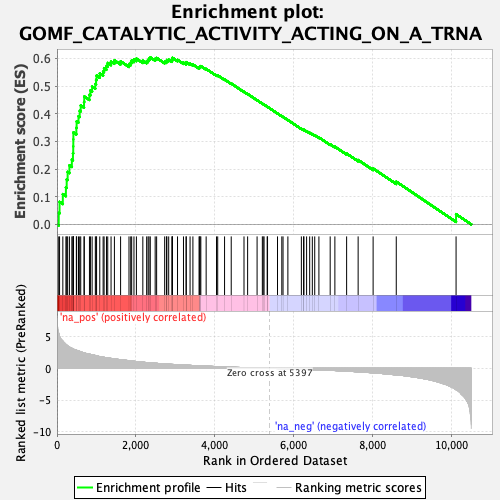
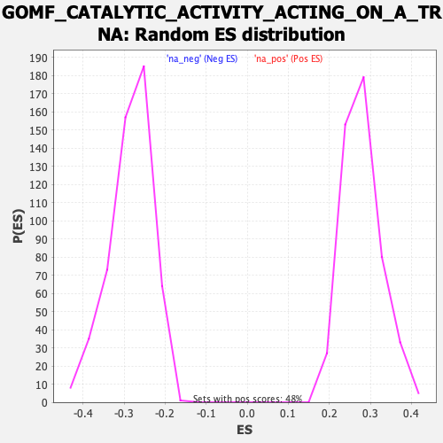

| Dataset | qlf.KOd4vsWTd4_gsea_score |
| Phenotype | NoPhenotypeAvailable |
| Upregulated in class | na_pos |
| GeneSet | GOMF_CATALYTIC_ACTIVITY_ACTING_ON_A_TRNA |
| Enrichment Score (ES) | 0.60331976 |
| Normalized Enrichment Score (NES) | 2.15988 |
| Nominal p-value | 0.0 |
| FDR q-value | 1.48074905E-5 |
| FWER p-Value | 0.001 |

| SYMBOL | RANK IN GENE LIST | RANK METRIC SCORE | RUNNING ES | CORE ENRICHMENT | |
|---|---|---|---|---|---|
| 1 | PUS1 | 44 | 5.471 | 0.0415 | Yes |
| 2 | METTL1 | 65 | 5.025 | 0.0815 | Yes |
| 3 | TRMT61A | 148 | 4.282 | 0.1094 | Yes |
| 4 | NSUN2 | 226 | 3.772 | 0.1335 | Yes |
| 5 | WDR4 | 246 | 3.672 | 0.1624 | Yes |
| 6 | RPP14 | 270 | 3.533 | 0.1897 | Yes |
| 7 | POP1 | 315 | 3.354 | 0.2135 | Yes |
| 8 | TRMT5 | 377 | 3.157 | 0.2340 | Yes |
| 9 | FARSB | 405 | 3.064 | 0.2570 | Yes |
| 10 | FARSA | 412 | 3.040 | 0.2818 | Yes |
| 11 | DUS1L | 414 | 3.033 | 0.3071 | Yes |
| 12 | RPP30 | 416 | 3.028 | 0.3323 | Yes |
| 13 | RPP38 | 491 | 2.850 | 0.3490 | Yes |
| 14 | ELAC2 | 498 | 2.841 | 0.3721 | Yes |
| 15 | TRMT11 | 545 | 2.766 | 0.3908 | Yes |
| 16 | TSEN2 | 576 | 2.674 | 0.4103 | Yes |
| 17 | TRMT1 | 602 | 2.620 | 0.4298 | Yes |
| 18 | TRMT10A | 686 | 2.444 | 0.4422 | Yes |
| 19 | RPPH1 | 692 | 2.440 | 0.4621 | Yes |
| 20 | DUS4L | 823 | 2.227 | 0.4682 | Yes |
| 21 | QTRT1 | 848 | 2.198 | 0.4843 | Yes |
| 22 | TRMT10C | 891 | 2.133 | 0.4981 | Yes |
| 23 | DTWD2 | 972 | 2.024 | 0.5073 | Yes |
| 24 | AARSD1 | 991 | 2.003 | 0.5223 | Yes |
| 25 | TARS2 | 1004 | 1.981 | 0.5377 | Yes |
| 26 | GATC | 1085 | 1.852 | 0.5455 | Yes |
| 27 | TYW3 | 1170 | 1.755 | 0.5521 | Yes |
| 28 | POP5 | 1194 | 1.735 | 0.5644 | Yes |
| 29 | RARS2 | 1255 | 1.673 | 0.5726 | Yes |
| 30 | EARS2 | 1287 | 1.640 | 0.5833 | Yes |
| 31 | TRNT1 | 1371 | 1.564 | 0.5884 | Yes |
| 32 | CARS2 | 1456 | 1.491 | 0.5928 | Yes |
| 33 | DUS3L | 1613 | 1.365 | 0.5892 | Yes |
| 34 | DTD2 | 1826 | 1.204 | 0.5789 | Yes |
| 35 | MARS2 | 1870 | 1.171 | 0.5846 | Yes |
| 36 | NARS2 | 1894 | 1.157 | 0.5920 | Yes |
| 37 | RPP40 | 1952 | 1.113 | 0.5958 | Yes |
| 38 | POP4 | 2014 | 1.070 | 0.5989 | Yes |
| 39 | ALKBH8 | 2177 | 0.970 | 0.5915 | Yes |
| 40 | METTL8 | 2274 | 0.910 | 0.5899 | Yes |
| 41 | PTRH2 | 2310 | 0.890 | 0.5939 | Yes |
| 42 | GATB | 2334 | 0.880 | 0.5991 | Yes |
| 43 | VARS2 | 2366 | 0.865 | 0.6033 | Yes |
| 44 | PUS10 | 2490 | 0.807 | 0.5983 | No |
| 45 | FTSJ1 | 2527 | 0.788 | 0.6014 | No |
| 46 | YARS2 | 2731 | 0.701 | 0.5877 | No |
| 47 | TRMT13 | 2776 | 0.683 | 0.5892 | No |
| 48 | PARS2 | 2787 | 0.678 | 0.5939 | No |
| 49 | TRMT44 | 2833 | 0.657 | 0.5951 | No |
| 50 | LARS2 | 2914 | 0.623 | 0.5926 | No |
| 51 | THUMPD3 | 2927 | 0.619 | 0.5966 | No |
| 52 | IARS2 | 2928 | 0.619 | 0.6018 | No |
| 53 | MTFMT | 3057 | 0.577 | 0.5943 | No |
| 54 | METTL6 | 3208 | 0.521 | 0.5843 | No |
| 55 | PUS3 | 3276 | 0.498 | 0.5820 | No |
| 56 | CDKAL1 | 3277 | 0.498 | 0.5862 | No |
| 57 | TYW1 | 3375 | 0.468 | 0.5808 | No |
| 58 | TYW5 | 3447 | 0.446 | 0.5777 | No |
| 59 | LCMT2 | 3603 | 0.398 | 0.5661 | No |
| 60 | TRMT1L | 3619 | 0.392 | 0.5679 | No |
| 61 | ALKBH1 | 3628 | 0.388 | 0.5704 | No |
| 62 | TRMT10B | 3648 | 0.384 | 0.5718 | No |
| 63 | TRMU | 3783 | 0.346 | 0.5618 | No |
| 64 | POP7 | 4046 | 0.277 | 0.5390 | No |
| 65 | DARS2 | 4076 | 0.270 | 0.5384 | No |
| 66 | DTWD1 | 4250 | 0.226 | 0.5237 | No |
| 67 | TRMT61B | 4419 | 0.187 | 0.5092 | No |
| 68 | TRMT2B | 4743 | 0.115 | 0.4791 | No |
| 69 | TSEN34 | 4835 | 0.100 | 0.4712 | No |
| 70 | AARS2 | 5075 | 0.056 | 0.4487 | No |
| 71 | TRPT1 | 5208 | 0.033 | 0.4363 | No |
| 72 | DTD1 | 5229 | 0.031 | 0.4347 | No |
| 73 | SEPSECS | 5252 | 0.027 | 0.4328 | No |
| 74 | TRIT1 | 5331 | 0.014 | 0.4254 | No |
| 75 | TRMT12 | 5340 | 0.012 | 0.4247 | No |
| 76 | FARS2 | 5593 | -0.031 | 0.4008 | No |
| 77 | FTO | 5702 | -0.047 | 0.3908 | No |
| 78 | PTRHD1 | 5733 | -0.053 | 0.3884 | No |
| 79 | NSUN6 | 5856 | -0.072 | 0.3773 | No |
| 80 | LRRC47 | 6198 | -0.134 | 0.3456 | No |
| 81 | SARS2 | 6254 | -0.146 | 0.3416 | No |
| 82 | HARS2 | 6263 | -0.148 | 0.3421 | No |
| 83 | ELAC1 | 6331 | -0.161 | 0.3370 | No |
| 84 | QRSL1 | 6409 | -0.182 | 0.3311 | No |
| 85 | DUS2 | 6476 | -0.195 | 0.3264 | No |
| 86 | RPP21 | 6537 | -0.208 | 0.3224 | No |
| 87 | PSTK | 6643 | -0.234 | 0.3142 | No |
| 88 | BCDIN3D | 6929 | -0.309 | 0.2894 | No |
| 89 | DALRD3 | 7048 | -0.341 | 0.2810 | No |
| 90 | NSUN3 | 7346 | -0.434 | 0.2561 | No |
| 91 | TRDMT1 | 7638 | -0.548 | 0.2327 | No |
| 92 | WARS2 | 8018 | -0.701 | 0.2022 | No |
| 93 | THUMPD2 | 8605 | -1.031 | 0.1545 | No |
| 94 | PTRH1 | 10122 | -3.364 | 0.0371 | No |
